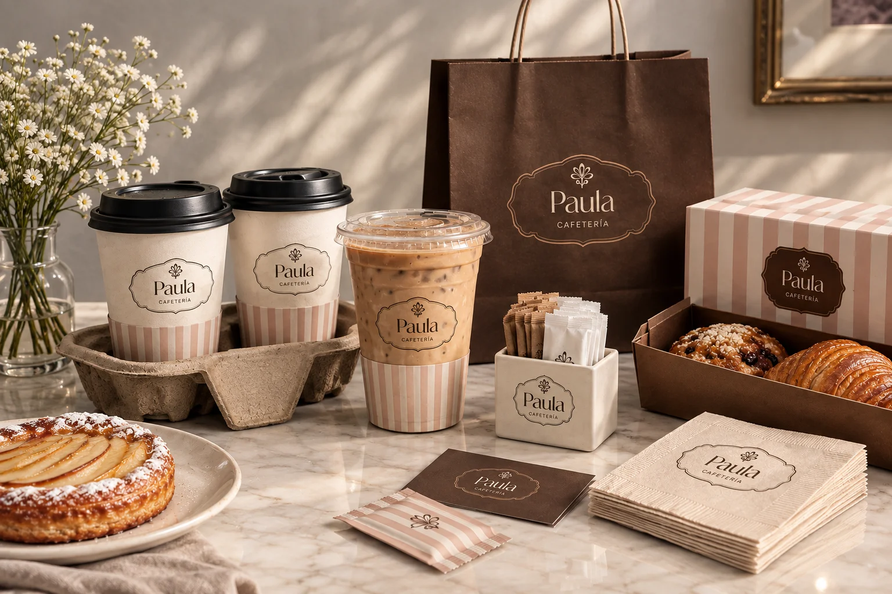
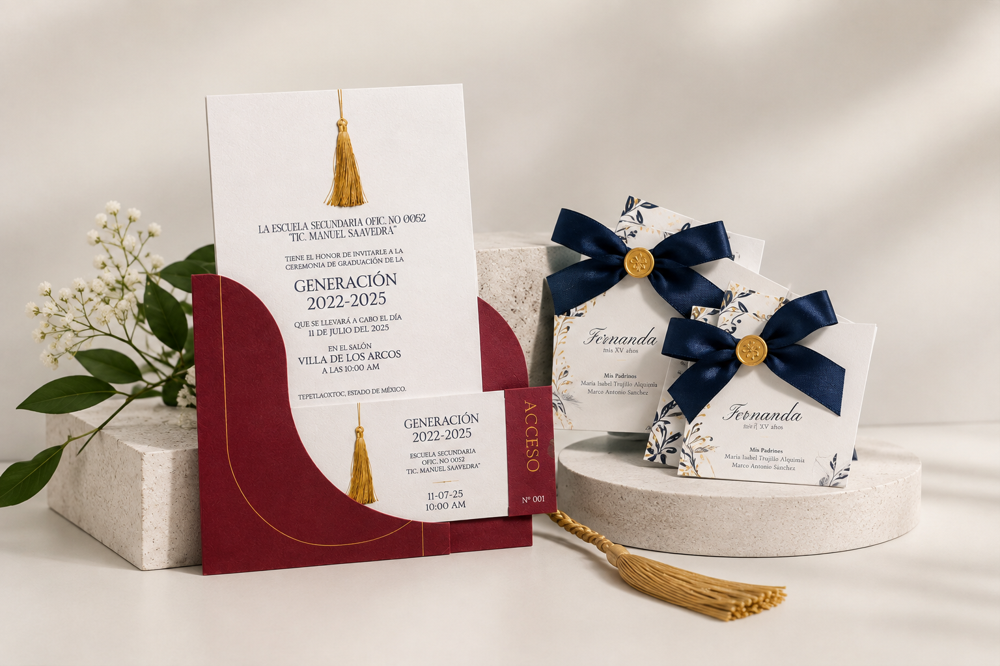
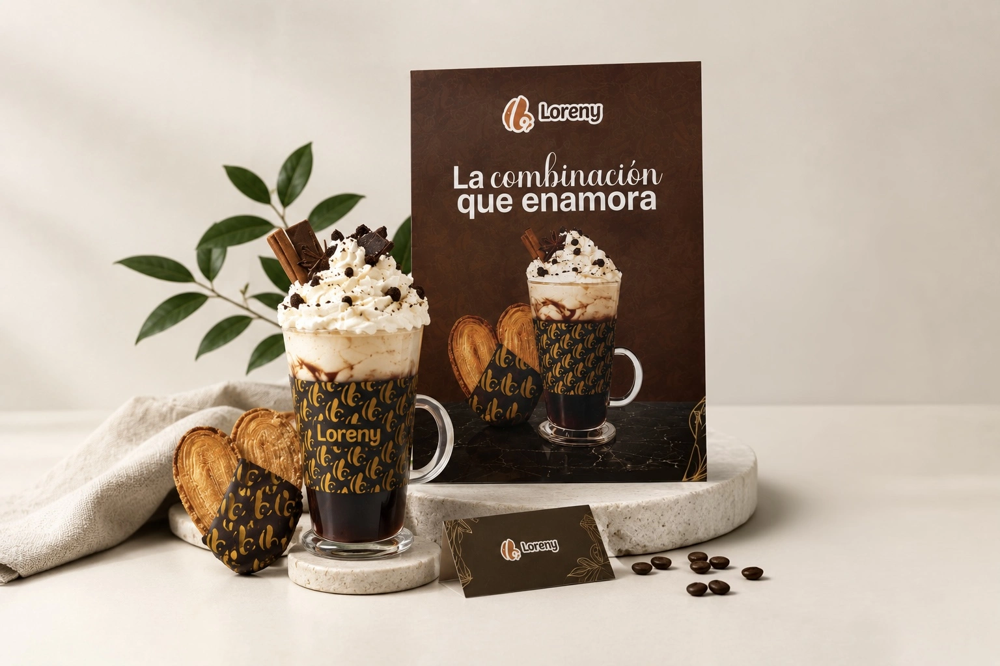
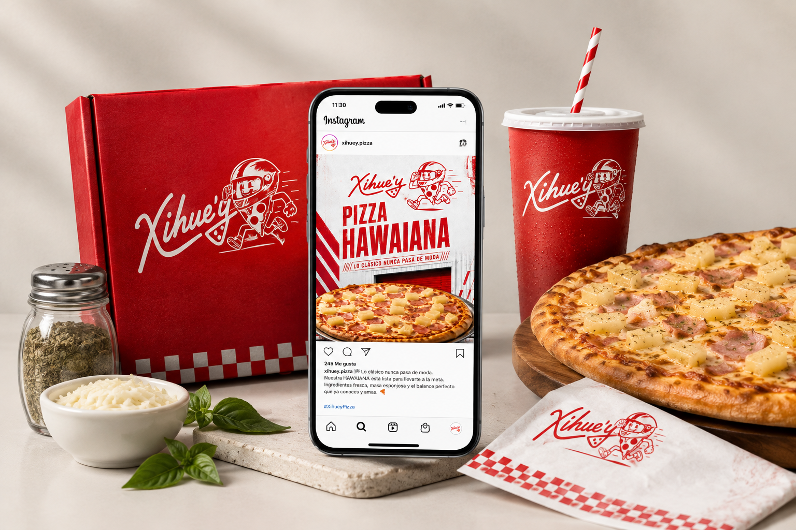

Paula Cafetería
Una identidad cálida y cuidada llevada del sistema visual a la experiencia de marca.

Una selección curada de identidades, experiencias, piezas digitales y proyectos visuales creados para convertir ideas en algo que se puede ver, vivir y recordar.
No todo proyecto necesita la misma forma. Cada solución parte de lo que la idea necesita para existir.

Una identidad cálida y cuidada llevada del sistema visual a la experiencia de marca.

Diseño de invitaciones físicas y digitales, recuerdos y papelería pensados para que cada detalle forme parte de la celebración.
Una identidad visual llevada a producto y comunicación, con un sistema que mantiene la marca reconocible en cada punto de contacto.
Explorar proyecto

Páginas web, micrositios e invitaciones digitales pensadas para trasladar la identidad de una marca a la pantalla con claridad y personalidad.

Concepto, composición y contenido para que una idea tenga una presencia visual coherente.
El portafolio completo también reúne producción de eventos, 3D, diseño de espacios, fotografía y marketing. Son disciplinas que amplían lo que una idea puede convertirse.
Pasarela de Modas UNITEC · dirección visual · materiales promocionales · coordinación.
Fábulas de Esopo · showrooms · recorridos virtuales · iluminación y conceptualización.
Evento en vivo · documental · arquitectura · exploración de luz y atmósfera.
Branding, campañas, piezas para redes y estrategias visuales.
Cuéntame qué quieres crear y encontremos la forma de llevarlo a la realidad.
Solicitar cotización